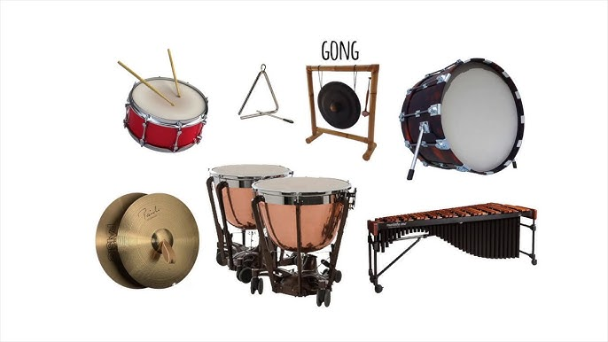

Un instrumento de percusión es un tipo de instrumento musical que suena al ser golpeado, agitado o raspado por
una baqueta, mazo o palillo incluyendo batidores adjuntos o cerrados o sonajeros golpeados, raspados o frotados
con la mano o golpeados contra otro instrumento similar. Excluyendo los instrumentos de zoomusicología y la
voz humana, se cree que la familia de la percusión incluye los instrumentos musicales más antiguos.
La sección de percusión de una orquesta suele contener instrumentos como los timbales, el bombo, los platillos,
el triángulo y la pandereta. Sin embargo, la sección también puede contener instrumentos no percutivos, como
silbato y sirena, o una caracola soplada. Las técnicas de percusión pueden aplicarse incluso al propio cuerpo
humano, como en la percusión corporal. Por otro lado, los instrumentos de teclado, como la celesta, no suelen
formar parte de la sección de percusión, pero están incluidos los instrumentos de percusión de teclado como el
glockenspiel y el arpa (que no tienen teclados de piano).
Excluyendo los instrumentos zoomusicología y la voz humana, se cree que la familia de la percusión incluye los
instrumentos musicales más antiguos. A pesar de ser un término muy común para designar instrumentos, y para
relacionarlos con sus intérpretes, los percusionistas, la percusión no es una categoría clasificatoria
sistemática de instrumentos, tal y como la describe el campo científico de la organología. A continuación se
muestra que los instrumentos de percusión pueden pertenecer a las clases organológicas de idiófono,
membranófono, aerófono e cordófono.
La percusión se distingue por la variedad de timbres que es capaz de producir y por su facilidad de adaptación
con otros instrumentos musicales. Cabe destacar que puede obtenerse una gran variedad de sonidos según las
distintas baquetas o mazos que se usan para golpear algunos de los instrumentos de percusión.
Un instrumento de percusión puede ser usado para crear patrones de ritmos (batería, tam-tam, caja vallenata,
entre otros) o bien para emitir notas musicales (xilófono).
Suele acompañar a otros con el fin de crear y mantener el ritmo. Algunos de los instrumentos de percusión más
famosos son el tambor con sus redobles y la batería.
La sección de percusión de una orquesta contiene más comúnmente instrumentos como los timbales o timbales de
concierto caja, bombo, pandereta, pertenecientes a los membranófonos, y címbalos y. triángulo, que son
idiófonos. Sin embargo, la sección también puede contener aerófonos, como silbatos y sirenas, o una caracola
soplada. Las técnicas de percusión pueden aplicarse incluso al propio cuerpo humano, como en la percusión
corporal. Por otro lado, los instrumentos de teclado, como la celesta, no suelen formar parte de la sección de
percusión, pero sí se incluyen instrumentos de percusión de teclado como el glockenspiel y el xilófono (que no
tienen teclado de piano).
Los instrumentos de percusión suelen dividirse en dos clases: Instrumentos de percusión afinada, que producen
notas con un tono identificable, e instrumentos de percusión no afinada, que producen notas o sonidos en un tono
indefinido.

Clasificacion de algunos instrumentos de percusion